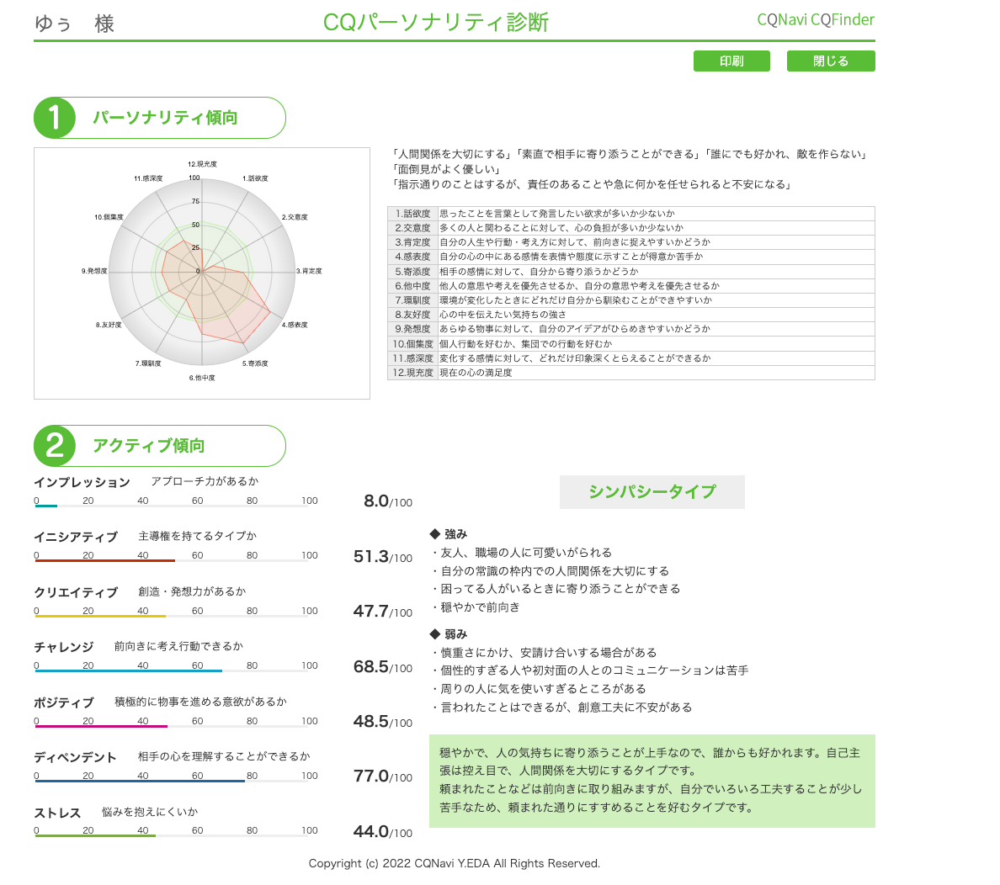

気が合う人と笑い合いたい、共感の温度で動く繊細さん。
1時間40分のセッションを、お持ち帰りの取扱説明書に
セッション中の言葉と、CQ診断（個性発見テスト）の結果から見えてきた、ゆぅさんの輪郭です。
ゆぅさんは、人の気持ちにふっと気づける、共感の温度がとても高い人です。CQ診断では「感情表現」と「共感性」が両方高めに出るタイプ＝シンパシータイプ。一般に「繊細さん／HSP」と呼ばれる人と、感性の作りがよく似ています。
「自分は不器用で、ひっそりマイペース」と何度も言いますが、それは欠点ではなく、感性が深く繊細にできているサイン。雑にできない・適当にできない・相手の気持ちを置いていけない——その丁寧さが、ゆぅさんの一番の素材です。
セッション後半で「ジャッジしてたかも」「面白そうって感情、忘れてたかも」と言葉にしてくれた瞬間、すでにゆぅさん自身が一番大事な扉を開けています。
広島県・主婦・第2子妊娠中

判定：シンパシータイプ — 共感性・感情表現が高く、相手の気持ちを察して温度で動く人
セッション中に「あ〜それ私や」って何度も言ってたパターン。これ、繊細さん＋共感タイプの典型仕様です。
機嫌がいい日はめちゃ動ける、落ちる日は何もできない。「振り回されてる感じ」と言ってたあれ。感情のラリーが豊かな人ほど、振れ幅も大きく出ます。
聞かれた瞬間、「この人はどう答えてほしいかな」が先に浮かぶ。気遣いの才能。ただし、自分の気持ちが置き去りになりやすい注意ポイントでもある。
「自分の気持ちを言おうとすると、ゴニャゴニャになっちゃう」。これは雰囲気を読みすぎて、自分の輪郭がぼやけている状態。共感タイプの代表的なクセ。
「これ今3度目やってて、何やってるんだろう」と笑ってたところ。完璧にできない自分が許せなくて、途中をリセットしてしまう。実はこれ「諦め」じゃなくて「やり直す力」の現れ。
FP3級の文字が頭に入らず投げ出してしまった話。これは根性のなさじゃなく、繊細さんが「自分を守るブレーキ」を素直に踏める証拠。雑に進めない人の特性。
「共感できる仲間がいたら頑張れる」「ご主人と一緒なら登れる気がする」。一人より二人、二人より気が合う仲間。共感の温度で動くエンジンの正体です。
セッションで一番ハッとした本音。マイペースに過ごしたい気持ちと、繋がっていたい気持ち。両方あって自然。両方守っていい矛盾です。
魔女の宅急便、洋楽、家族や子どもとの空気。ゆぅさんは「世界に深く入り込んで味わう力」が高い人。これは創作・発信・人を癒す仕事の素材になる感性です。
エンジンが気持ちよく動く環境と、消耗してしまう環境。両方を知っておくと、「あ、いまこの状態だな」と扱いやすくなります。
セッション中、ふっと出てきた本音の言葉たち。あとで読み返したい一節を残しておきます。
ジャッジしてたんかな、決めつけてるかもしれない。
面白そうという、そういう感情みたいなの、ちょっと忘れてたかもしれない。
結構、自分の中で制限してたかもしれないです、勝手に。
一人は好きだけど、一人になるのは怖い。笑うのも怖い、っていう気持ちもあるのかもしれません。
共感してほしいのかな。同じ気持ちの人がいたりとか、共感できる仲間を見つけたい。
夫と一緒に、いいねいいねって、小金持ち山に登りたい。
1ヶ月後、自分のやりたいことが、ふっと5つくらい言えたらいいな。
FP3級・洋楽YouTube・2週間チャレンジ・繊細さんチャット・このセッション。ゆぅさんは止まってるんじゃなくて、自分に合うものを丁寧に試している最中です。
セッションで出てきた「不安・ブロック」たち。消そうとしなくて大丈夫。気づいておくだけで、振り回されにくくなります。
全部やる必要なし。「これならできるかも」を1個だけ選んでみて。ゆぅさんは、踏めば次が見えてくる人。1ヶ月後にやってみた感想を、また聞かせて🌷
スマホを置いて、近所を3分だけ歩く。気になったお店に入ってみる、知らない道を曲がってみる。「面白そう」の感度を取り戻す、いちばん小さな練習。
1日1個でいい、寝る前に「今日心地よかったこと」を1つ思い出す。共感タイプは感覚で記録した方が、自分の好きが見えてきます。
広島オフィスの管理人さんがいる時間帯に、お茶飲みに行くだけ。雑談ゼロでもOK。共感の温度で動く人は、「同じ温度の場」に居るだけで充電されます。
気持ちを丸ごとぶつける必要なし。「これ嬉しかったから、いいねって言ってほしいな」だけでOK。ご主人にも、共感の通り道がはっきり見えます。
消そうとしなくていい。「あ、またジャッジが来た」って眺めるだけ。共感タイプはジャッジを外した瞬間、自分の感覚が動き出します。
止まってる罪悪感は要らない。「あの曲やっぱり好き」って思った日に1行書く、それだけで再起動。何に面白さを感じ、何にしんどさを感じるかを、丁寧に切り分けていく。
ゆぅさん自身が決めたゴール。できなくても全然OK、「2つしか出てこなかった」も大事な情報。やってみた感想を、また一緒に整理しましょう。